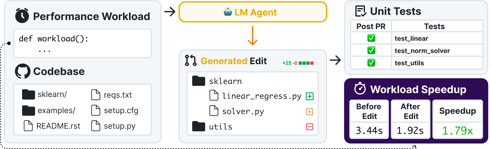

Leaderboard
| System | Speedup Ratio |
|---|
We evaluate models using Speedup Ratio (SR). SR tests how well models match up against expert speedups: SR = (LM speedup) / (Expert speedup). An SR of 1.0× means the model matches human expert speedup (and above 1.0× means surpassing expert performance).
Overview
SWE-fficiency (pronounced swee-FISH-uhn-see) challenges language models to optimize the runtime of real repos on real workloads. It contains 498 tasks across nine popular Python repos, including numpy, pandas, aand scipy.
Given a complete codebase and a real workload, agents must investigate code semantics, localize bottlenecks and relevant tests, and produce a patch that matches or exceeds expert speedup while passing the same unit tests. This challenges models to perform the investigative, pass-to-pass workflow of real performance engineering.
Our evaluation reveals significant underperformance of current state-of-the-art agents. On average, top frontier models achieve less than 0.15× the expert speedup, struggling with localizing optimization opportunities, reasoning about execution across functions, and maintaining correctness in proposed edits.